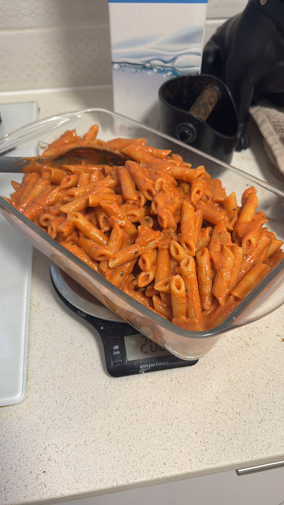

Rose Penne

Description
This is my rose penne, a simple and quick savory dish.
Ingredients
- 25ml olive oil
- 25g butter
- chopped medium onion
- 10g grated garlic cloves
- 600g tomato passata
- 250ml thickened cream
- 500g penne pasta
- salt, pepper, and spices to taste
Steps
- Bring the onion to a golden color in the butter and olive oil in a pan
- Add the garlic for 30-60s / until fragrant
- Add the passata, thickened cream, beef stock and orzo
- Season with spices to taste
- Cook the pasta as per instructions in a large pot of water with rock salt
- Combine cooked pasta with the sauce
- Serve and enjoy!
Home